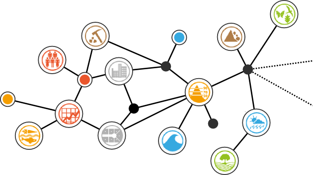

<header>
  <a href="/index.html"><h1>INSPIRE Data Specification Extensions</h1></a>
  {% if page.slug == "index" %}
  <p>Get the most out of INSPIRE by extending data specifications!</p>
  <div>
    
  </div>
  {% else %}
  <div id="toc">
    <ol class="tocLevel1">
      <li>{% if page.slug == "introduction" %}<strong>{% endif %}<a href="/introduction.html">Introduction{% if page.slug == "introduction" %}</strong>{% endif %}</a>
        {% if page.slug == "introduction" %}
        <ol class="tocLevel2">
          <li><a href="#methodology">Methodology</a></li>
          <li><a href="#contributions">Contributions</a></li>
        </ol>
        {% endif %}
      </li>
      <li>{% if page.slug == "survey" %}<strong>{% endif %}<a href="/survey.html">Results of the Survey{% if page.slug == "survey" %}</strong>{% endif %}</a>
        {% if page.slug == "survey" %}
        <ol class="tocLevel2">
          <li><a href="#Purpose">Purpose</a></li>
          <li><a href="#methodology">Methodology</a></li>
          <li><a href="#overview">Overview</a></li>
          <li><a href="#expertise">Expertise and Background</a></li>
          <li><a href="#motivation">Motivation and Scope</a></li>
          <li><a href="#challenges">Challenges Reported</a></li>
          <li><a href="#bestPractices">Best Practices</a></li>
        </ol>
        {% endif %}
      </li>
      <li>{% if page.slug == "models" or page.category == "models" %}<strong>{% endif %}<a href="/models/index.html">Inventory of Model Extensions{% if page.slug == "models" or page.category == "models" %}</strong>{% endif %}</a>
        {% if page.slug == "models" or page.category == "models" %}
        <ol class="tocLevel2">
          <li><a href="/models/index.html#browseByTag">Browse by Tag</a></li>
          <li><a href="/models/index.html#browseByDate">Browse by Date</a></li>
        </ol>
        {% endif %}
      </li>
      <li><a href="#_inspireMda"></a>Introduction to the INSPIRE Model-Driven Methodology
      </li>
      <li><a href="#_catalogue"></a>The Pattern Catalogue
      </li>
      <li><a href="#_tutorial"></a>An End-to-End Tutorial Project
      </li>
      <li><a href="#_summary"></a>Summary and Conclusions
      </li>
    </ol>
  </div>
  {% endif %}

</header>